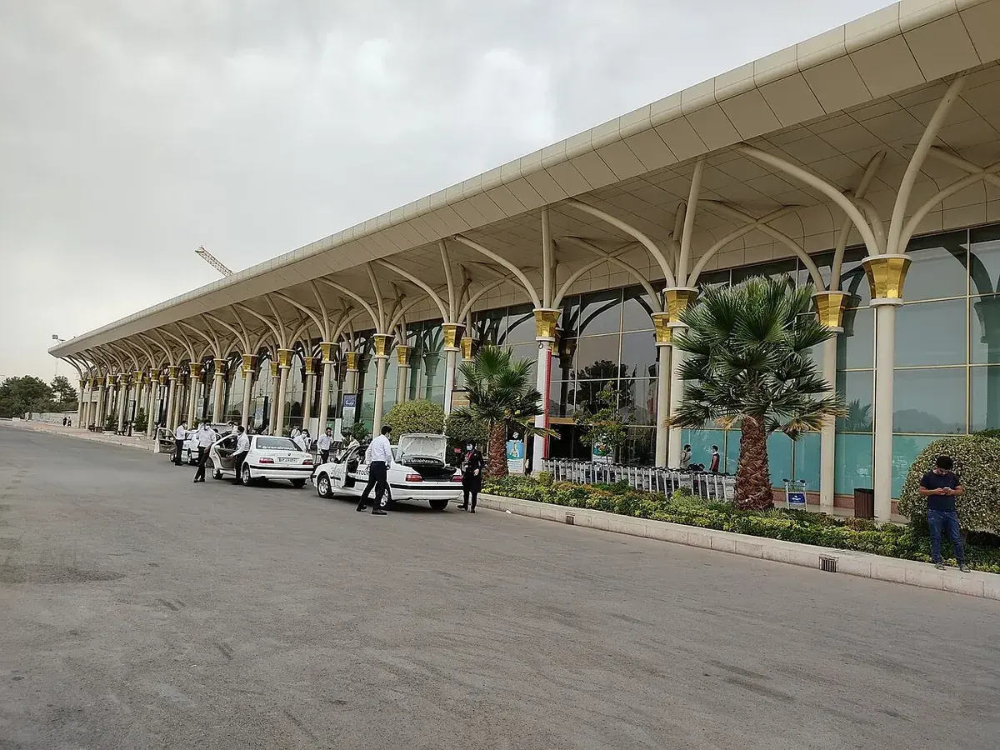

دليل السفر إلى مشهد · المواصلات داخل مشهد، النقل إلى الحرم، التنقل العائلي
كيف تتنقل داخل مشهد؟
الإجابة المختصرة
يتحدد اختيار وسيلة التنقل في مشهد بموقع إقامتك وعدد المسافرين وكمية الأمتعة ووقت الرحلة. قارن الخيارات بحسب التكلفة الكاملة وسهولة الوصول والملاءمة لاحتياجاتك، وتحقق من الأوقات والأسعار المتاحة قبل الانطلاق، إذ لا تصلح التقديرات الثابتة لكل رحلة.

اختيار وسيلة التنقل في مشهد يعتمد على موقع إقامتك، وعدد المسافرين، والأمتعة، ووقت الرحلة. قارن الخيارات على أساس التكلفة الكاملة وسهولة الوصول، ولا تعتمد على تقديرات ثابتة للوقت أو السعر.
ابدأ بموقع الإقامة والوجهة
قبل اختيار وسيلة النقل، حدّد عنوان الإقامة بدقة والوجهات التي ستزورها. عبارة «قريب من الحرم» لا تكفي وحدها؛ تحقق من المسافة الفعلية ومسار المشي وإمكانية الوصول، خصوصاً مع الأطفال أو كبار السن.
احتفظ بعنوان الإقامة مكتوباً باللغة الفارسية أو على الخريطة، مع نسخة يمكن عرضها دون اتصال بالإنترنت. لا تشارك بياناتك الشخصية إلا مع مقدم الخدمة الذي تحتاجه.
قارن وسائل النقل قبل الانطلاق
قد تتوفر خيارات مختلفة مثل سيارات الأجرة وخدمات النقل الخاص ووسائل النقل العام، لكن التوفر والتشغيل والتعرفة تتغير. تحقق من الخيارات المتاحة في يوم رحلتك ومن نقاط الصعود والنزول قبل الاعتماد عليها.
قبل بدء الرحلة، اتفق على طريقة احتساب الأجرة وما إذا كانت تشمل الانتظار أو الأمتعة أو التوقفات الإضافية. تجنب افتراض أن سعراً قديماً أو تجربة مسافر آخر تنطبق على رحلتك.
من المطار إلى الإقامة
بعد الوصول، ضع في الحسبان وقت استلام الأمتعة والازدحام ووقت الوصول إلى مكان الإقامة. إذا كانت الرحلة عائلية أو تصل في وقت متأخر، فرتّب خياراً واضحاً مسبقاً وتأكد من تفاصيله قبل المغادرة.
راجع الدليل المتخصص من مطار مشهد إلى الحرم، وتأكد من نقطة الالتقاء واسم السائق أو وسيلة التعرف عليه إن كنت قد رتبت نقلاً مسبقاً.
التنقل مع الأسرة أو احتياجات الحركة
أخبر مقدم الخدمة بعدد الركاب وحقائبهم وأي احتياج متعلق بالحركة قبل تأكيد السيارة. لا تفترض وجود مقعد أطفال أو تجهيزات وصول ميسّر ما لم يؤكدها مقدم الخدمة صراحة.
اجعل البرنامج مرناً في أوقات الازدحام، وحدد نقطة لقاء واضحة عند زيارة الأماكن المزدحمة. إذا كانت لديك مواعيد مهمة، اترك وقتاً احتياطياً بدلاً من جدولة انتقالات متتابعة بلا هامش.
المترو والحافلات
قبل الاعتماد على النقل العام، تحقق من الخطوط والمحطات القريبة من نقطة الانطلاق والوجهة، وساعات التشغيل وطريقة شراء التذكرة أو شحن بطاقة النقل. قد لا يصل المترو أو الحافلة إلى الباب الذي تريده، وقد تحتاج إلى مشي أو وسيلة مكملة.
احفظ اسم المحطة أو العنوان بالفارسية، وتأكد من اتجاه الرحلة قبل الصعود. لا تعتمد على لقطة شاشة قديمة للخريطة أو جدول غير مؤرخ.
سيارات الأجرة والنقل الخاص
قبل بدء الرحلة، اتفق على الوجهة والسعر أو طريقة احتسابه، وتأكد من أن السيارة ستوصلك إلى العنوان الصحيح. استخدم القنوات الرسمية أو مقدمي الخدمة الذين يمكن التحقق من هويتهم، وتجنب مشاركة بيانات شخصية غير ضرورية.
للوصول من المطار، راجع دليل الانتقال من مطار مشهد إلى الحرم وقارن التكلفة الكاملة مع احتياجات الأمتعة والركاب.
حساب الوقت والتكلفة
لا تقارن السعر فقط؛ أضف وقت الانتظار والمشي والتبديل والحقائب. اترك وقتاً احتياطياً عند الذهاب إلى موعد طبي أو رحلة مغادرة، وتحقق من أي رسوم إضافية قبل قبول الخدمة.
يمكنك تنظيم المصاريف عبر دليل تكلفة رحلة مشهد وتخطيط نقاط الزيارة في برنامج ثلاثة أيام.
التنقل اليومي خارج مشهد والوصول البري
إلى جانب المترو وتطبيقات النقل داخل المدينة، يمكن تنسيق الانتقال بواسطة سائق عربي خاص أو مترجم إلى الضواحي في شانديز وطرقبه والمجمعات التجارية والحدائق المائية أو التحضير للربط مع محطات السفر البري في الطريق البري من العراق والقطار نحو مدينة قم، وتسهيل التفاهم مع السائقين عبر العبارات الفارسية اليومية.
مصادر رسمية ومراجع للتحقق
تحقق من المعلومات المتغيرة مباشرة من الجهات المختصة أو مقدم الخدمة قبل السفر أو الحجز؛ فقد تتغير المتطلبات والخدمات والأسعار.
أسئلة شائعة
ما وسائل التنقل المتاحة داخل مشهد؟
قد تشمل الخيارات سيارات الأجرة والنقل العام وخدمات النقل الخاصة، لكن التشغيل والتوفر يتغيران حسب المكان والوقت. تحقق من الخيارات المناسبة عند السفر.
كيف أختار وسيلة الوصول إلى الحرم؟
قارن موقع انطلاقك والوقت المتوقع والازدحام واحتياجات الأطفال أو كبار السن، واترك وقتاً احتياطياً في المناسبات المزدحمة.
هل يمكن الدفع نقداً أم إلكترونياً؟
لا تفترض أن كل وسيلة تقبل طريقة الدفع نفسها؛ اسأل المزود قبل بدء الرحلة واحتفظ ببديل مناسب.
ما المعلومات التي أشاركها مع السائق؟
شارك عنوان الوجهة بوضوح واحتفظ باسم مكان الإقامة ورقم التواصل، وتأكد من الوجهة قبل الانطلاق.
هل أوقات الرحلة ثابتة؟
تتأثر بالازدحام وحالة الطريق والوقت والمناسبات؛ أي تقدير زمني يظل تقريبياً ما لم تؤكده خدمة النقل لحظياً.
الخطوة التالية
إذا كنت تخطط لزيارة مشهد وتريد ترتيب الوصول أو الإقامة أو برنامج الرحلة، اطلع على صفحة الخدمات أو أرسل استفسارك إلى حسين عبر واتساب.